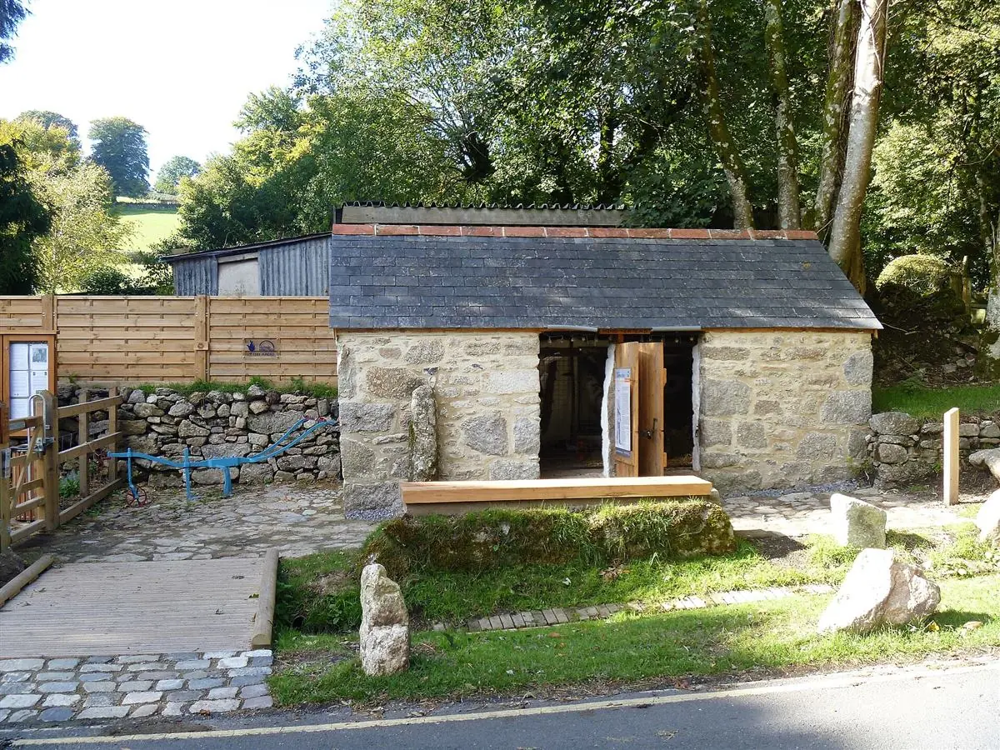

Cortes seleccionados envasados al vacío: lomo, secreto, pluma, presa y panceta. Sacrificio en matadero de proximidad y entrega refrigerada en 24–48 horas en un radio de 150 km.
Desde 9 €/kg
Granja familiar · desde 1987
En Piloño (Pontevedra) criamos cerdos en establos amplios, limpios y luminosos, con la mejor alimentación y todo el cuidado del mundo. Cumplimos la normativa de bienestar animal… y trabajamos cada día para superarla. Esa es toda la receta.
Nuestra familia lleva casi cuatro décadas criando cerdos en Piloño. Hoy lo hacemos en una granja moderna: establos amplios y luminosos, cama seca y cómoda, ventilación cuidada y espacio de sobra para moverse. Cumplimos toda la normativa de bienestar animal, y cada día intentamos superarla. No hay secretos: hay buen trato, buena comida y respeto por el animal.
Ver cómo trabajamos
Nuestra granja · Santa María de PiloñoEstablos amplios, luminosos y ventilados, con cama seca, agua limpia y espacio de sobra para moverse. Un animal tranquilo es la base de una carne con sabor y textura inigualables.
Cereales seleccionados y fórmulas adaptadas a cada etapa de la vida, con agua limpia a libre disposición. Sin atajos: si no es bueno para el animal, no entra en la granja.
Cada cerdo tiene su lote y su historia. Del nacimiento a tu puerta, sin intermediarios: nosotros criamos, curamos y entregamos.
Cortes seleccionados envasados al vacío: lomo, secreto, pluma, presa y panceta. Sacrificio en matadero de proximidad y entrega refrigerada en 24–48 horas en un radio de 150 km.
Chorizo, lomo, salchichón y jamón curados lentamente en nuestro secadero natural, solo con sal, pimentón y tiempo. Sin conservantes añadidos. Piezas enteras o loncheadas.
La forma más rentable de comprar: media pieza o entera, con el despiece a tu medida y todos los cortes etiquetados. Ideal para familias y para llenar la despensa del año.
Visitas guiadas los sábados por la mañana: recorremos la granja, ves cómo viven los animales —establos amplios, limpieza y cuidado en cada detalle— y terminamos con una degustación de embutidos. Grupos reducidos, apto para familias.
Dinos cuántos sois y cuánta carne coméis, y te decimos qué formato te conviene, cuánto te cuesta y cuánto te ahorras frente a comprar por kilos. Sin cuentas mentales.
Quienes comen en casa habitualmente.
Guisos, asados, filetes, embutidos…
Las camadas nacen en parideras amplias y tranquilas, con la madre cómoda y vigilancia diaria. Los lechones crecen con su grupo, sin prisas y con todo lo que necesitan a mano.
Crecen con piensos de cereales adaptados a cada etapa, agua limpia siempre disponible y mucho espacio para moverse. Sin prisas: cada animal a su ritmo, y así se nota.
Sacrificio respetuoso en matadero de proximidad, con control sanitario completo y trazabilidad de cada lote desde la finca.
Los embutidos maduran en secadero natural y la carne fresca sale directa a tu casa, en reparto propio refrigerado en 24–48 h.
Los sábados por la mañana abrimos la granja en grupos reducidos. Recorremos los establos, ves cómo viven los animales y acabamos con una degustación de embutidos de la casa.
Se nota en la veta de la carne y en el aroma del jamón. No hay ningún misterio: es buen trato y es tiempo. Llevo años cocinando con la Granja Piloño y no cambio.— Carmen R., cocinera y clienta desde 2012
Y si te falta algo, pregunta sin compromiso: contestamos en 24–48 h laborables.
Hacer una preguntaSí. Abrimos los sábados por la mañana con reserva previa y en grupos reducidos. Recorremos los establos, ves cómo viven los animales y terminamos con una degustación de embutidos. La reserva se hace desde esta misma página.
Entregamos en mano en un radio de unos 150 km desde Piloño (Villa de Cruces), con reparto propio refrigerado en 24–48 horas. Cubrimos toda Galicia y el occidente de Asturias y de León. Para distancias mayores, escríbenos y lo estudiamos.
La carne fresca sale en 24–48 horas desde la confirmación. Los embutidos y los jamones dependen de su curación, así que te damos la fecha exacta al cerrar el pedido.
Es medio cerdo ya despiezado y etiquetado. Una canal entera ronda los 85–95 kg y una media, unos 42–48 kg. Se entrega en los cortes que pidas y se conserva congelada sin problema. Puedes hacerte una idea con la calculadora de pedido.
En establos amplios y luminosos, con cama seca, ventilación cuidada y agua limpia a libre disposición. Se alimentan con cereales seleccionados y cumplimos —y trabajamos para superar— toda la normativa de bienestar animal. Cada lote tiene su trazabilidad desde el nacimiento.
Sí. Vendemos cortes sueltos al peso (lomo, secreto, pluma, presa, panceta…) desde 9 €/kg, envasados al vacío. Si compras media canal o canal entera, el precio por kilo baja bastante.
Transferencia o Bizum al confirmar el pedido, y efectivo en las entregas de la zona. Si necesitas factura con IVA, te la emitimos.
Sí. La explotación está inscrita en el Registro de Explotaciones Ganaderas de Galicia (REGA) y el sacrificio se realiza en un matadero de proximidad con control veterinario oficial.
Pedidos, visitas o simplemente dudas sobre cómo criamos: escríbenos y te contestamos en menos de 24–48 h laborables.